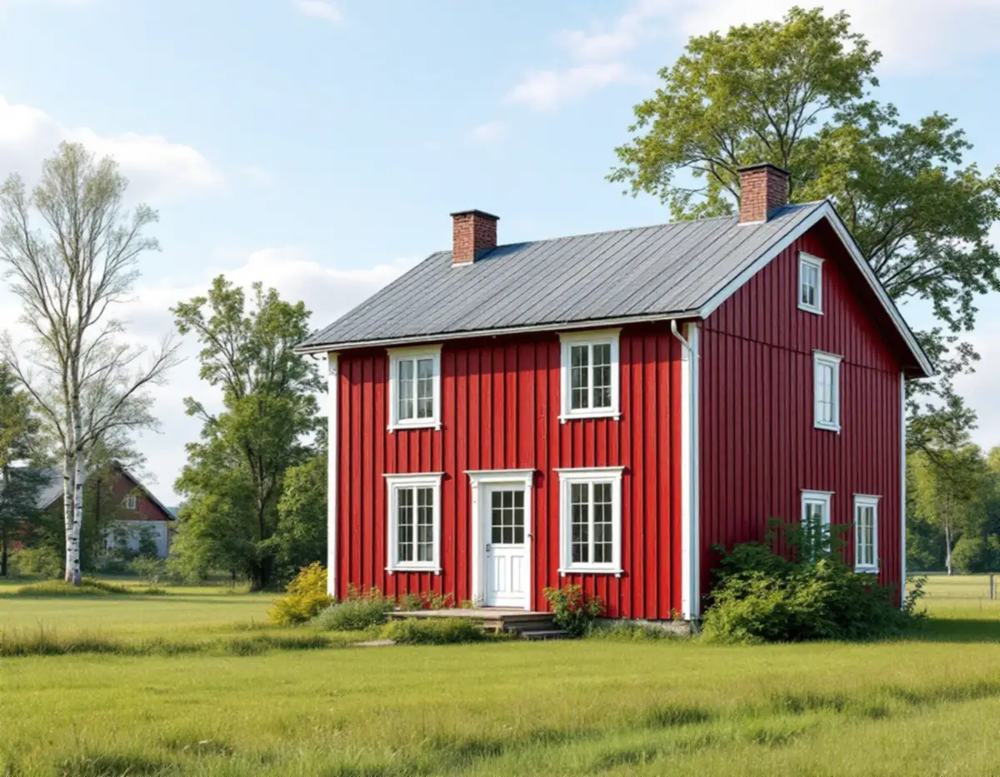
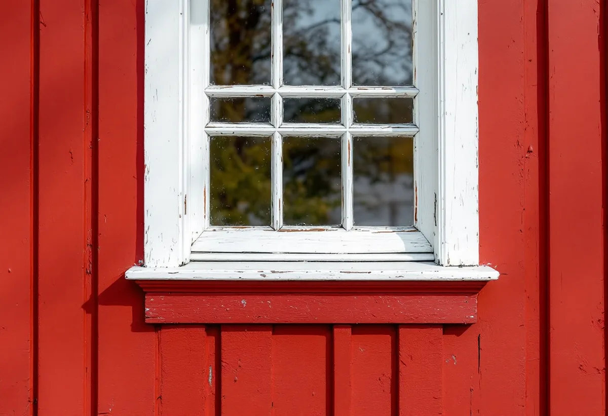

Läget först
Vi tar reda på om huset ligger inom detaljplan, i ett särskilt värdefullt område eller i ett riksintresse.
Norrtälje kommun har 26 kulturmiljöer av riksintresse, och i kommunens egna utredningar återkommer råden om fönster: behåll de gamla så långt det går. Här finns också drygt 26 000 fritidshus, och det påverkar vilka bidrag som går att få. Geal Entreprenad AB byter och renoverar fönster i Norrtälje stad, Rimbo, Hallstavik och i skärgården och lämnar ett skriftligt kostnadsförslag efter ett gratis platsbesök.

I Norrtälje kommun finns 26 områden som Riksantikvarieämbetet pekat ut som riksintressen för kulturmiljövården. År 2011 beslutade kommunen att göra kulturhistoriska utredningar av 22 av dem, för att få ett bättre beslutsunderlag och för att informera dem som bor där. Utredningarna omfattar skärgårdsmiljöer som Arholma, landsbygd som Länna och Vagnåla och industrimiljöer som Hallstavik, Herräng och Skebobruk. Utredningen för Herräng avslutas med tips och råd för den som bor där.
För Norrtälje stad finns ett eget bevarandeprogram. Kommunfullmäktige fastställde programmet för stadskärnan 1981, och 2008 beslutade bygg- och miljönämnden att det behövde uppdateras. Det är tänkt som vägledning för hur den del av stadskärnan som ligger inom riksintresset ska bevaras och vårdas.
Innan vi föreslår nya fönster på ett hus i ett av de här områdena läser vi därför vad utredningen säger om husen just där.

Kulturmiljöutredningen för Herräng från 2016 beskriver gårdarna väster om Blåkaren, från sent 1800-tal och tidigt 1900-tal, med rödfärgad stående panel och vita snickerier. Fönstren är ofta träspröjsade tvåluftsfönster indelade i tre rutor i varje luft. Om egnahemmen från brukets senare tid skriver utredningen att stilrena tvåluftsfönster hör till bostäderna.
Råden är tydliga. Gamla fönster bör bevaras i så stor utsträckning som möjligt, eftersom ett byte till moderna fönster ofta kan förändra hela fasadens gestaltning, och renovering av befintliga fönster är att föredra. Utredningen konstaterar att äldre fönstersnickerier ofta är utförda av trä med hög kvalitet och att omfattningar och snickerier målas med linoljefärg.
Utredningen visar också hur det kan bli fel. Om en ombyggd ekonomibyggnad skriver den att nya pivåfönster med planglas i de befintliga öppningarna förtar en del av upplevelsen av en autentisk byggnad. Även när öppningarna är kvar kan alltså fönstertypen ändra intrycket.
Norrtälje kommuns sida om fasadändring skiljer på läget. Inom detaljplan krävs inget bygglov för fasadändringar på ett en- eller tvåbostadshus, utom när detaljplanen har utökad lovplikt. Utanför detaljplan krävs lov om fastigheten ligger inom ett område som är särskilt värdefullt. I kommunens karta går det att kontrollera om fastigheten ligger i ett detaljplanerat område och om den är särskilt värdefull.
Kommunen ger allmän rådgivning men skriver att den inte kan bedöma enskilda åtgärder via e-post eller telefon. Den som vill ha ett bindande besked om ett fönsterbyte kräver lov kan ansöka om frivilligt lov, så att byggnadsnämnden gör en formell prövning.
Är huset ett gammalt sommarhus som ska bli åretruntbostad hör fönstren ofta ihop med tak och väggar. Läs mer under takbyte i Norrtälje och snickare i Norrtälje.
Boverkets bidrag för energieffektivisering i småhus kan sökas för byte av fönster eller dörrar och för tilläggsglasrutor till befintliga fönster. Det gäller den som äger och stadigvarande bor i ett småhus med värdeår före 1990 som inte är anslutet till fjärrvärme. Bidraget gäller inte ett fritidsboende, och huset ska normalt vara den adress där du är folkbokförd.
Bidraget täcker högst 30 procent av materialkostnaden, och produkterna ska klara kraven på energimärkning. Ansökan ska lämnas inom sex månader från att arbetet påbörjades, och det är länsstyrelsen som handlägger. Eftersom bidraget bara gäller material kan rotavdrag ges för arbetskostnaden i samma jobb.
För fritidshuset finns alltså inget sådant bidrag, men rotavdraget gäller även där. Kommunen räknar med drygt 26 000 fritidshus, så det är en skillnad som är bra att känna till innan fönstren beställs.
Vi tar reda på om huset ligger inom detaljplan, i ett särskilt värdefullt område eller i ett riksintresse.
Fönstren mäts upp, indelningen dokumenteras och bågarnas skick bedöms.
Där bågarna är friska föreslår vi renovering, annars nya fönster med samma indelning.
Material och arbete redovisas var för sig, vilket också behövs för bidrag och rotavdrag.
Fönstren renoveras eller byts, och snickerierna målas med den färgtyp som passar huset.
Vi går igenom arbetet med dig och lämnar de uppgifter som behövs till ansökan.
Rotavdraget gäller både villan och fritidshuset, så länge du äger det och använder det som bostad. Att reparera eller byta ut fönster, montera isolerglas och måla fönster räknas som rotarbete. Avdraget är 30 procent av arbetskostnaden, högst 50 000 kr per person och år och högst 75 000 kr tillsammans med rutavdrag.
Geal drar avdraget direkt på fakturan och redovisar material och arbete var för sig.
Om fönstren kan renoveras eller behöver bytas, om spröjs och indelning ska tillverkas efter förlaga, vilken färgtyp snickerierna ska ha, antal fönster och avståndet till huset. I skärgården påverkar båttransporter och väder planeringen. Efter ett gratis platsbesök får du ett skriftligt kostnadsförslag.
Byta eller renovera fönster.
Fönsterbyte i Stockholm →Takbyte, takbesiktning och plåtarbeten.
Takläggare i Norrtälje →Roslagen, skärgård och fritidshus.
Takrenovering i Norrtälje →Fritidshus, WC-tillstånd och brunn.
Badrumsrenovering i Norrtälje →Bruksvillor, sommarvillor och Roslagens trähus.
Fasadrenovering i Norrtälje →Plankgolv i gamla gårdar och parstugor.
Golvläggare i Norrtälje →Gasolspis, vedspis och pentry i gäststugan.
Köksrenovering i Norrtälje →Trähus, fritidshus och kustlägen i Norrtälje.
Målare i Norrtälje →Fritidshus, altan och gäststuga.
Snickare i Norrtälje →Kust, snö och Roslagens tak.
Takbyte i Norrtälje →